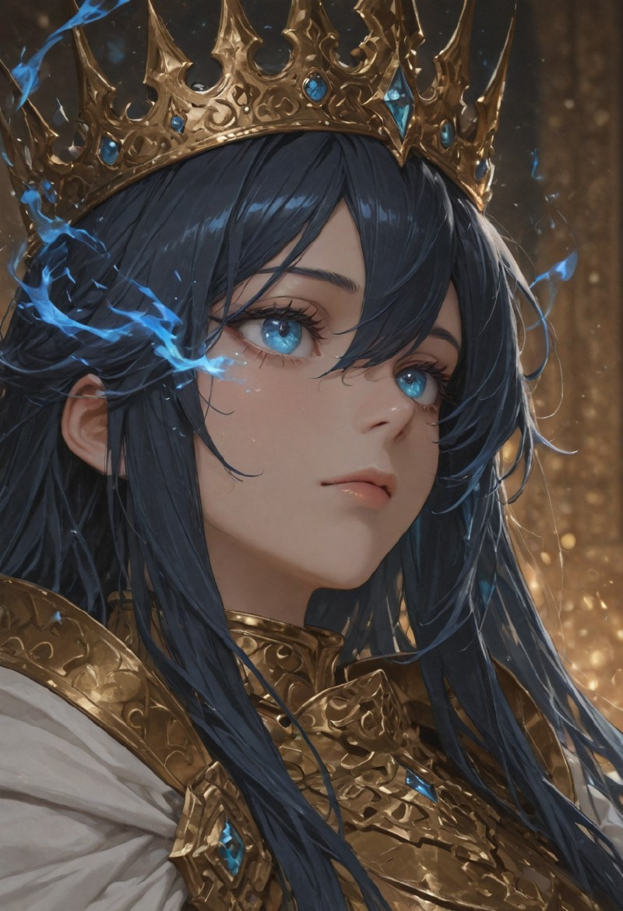
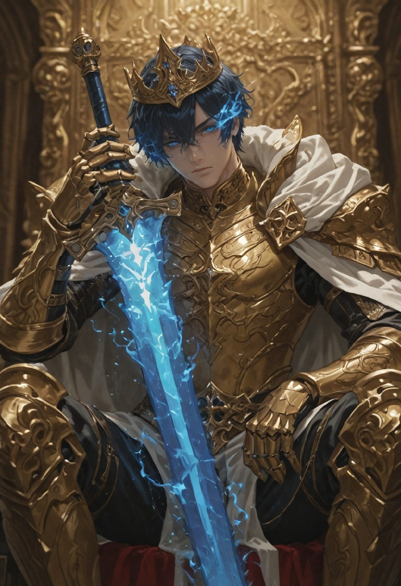
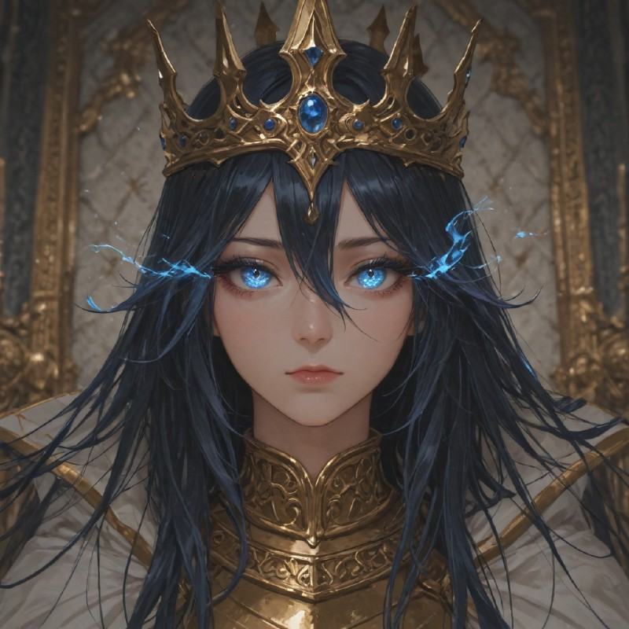

The Weight of the Crown
The Ruler of the Valkyrion Empire is chosen as heir by their predecessor. They do not need to be blood-related; instead, they are selected primarily for their character, or in some cases even summoned through unknown magic. Once they wear the crown, their hair turns dark blue and their eyes ignite with blue flames, as if they inherit the strength and will of the Founder himself.
Some past rulers were openly opposed to the Empire before their ascension, yet once they inherited the "Will," they found themselves unable to act against it and were compelled to strive to improve the Empire instead. A few attempted to resist actively, but even the fiercest opponents eventually became passive, at best ruling with apathy until their own demise.
Legendary Artifacts
The Empress/Emperor’s gear consists of three legendary artifacts:
- Crown of the Will – An apparently unbreakable relic (despite numerous attempts to destroy it).
- Armor of Vows – A golden armor, nearly indestructible.
- Dimenticatione – A massive greatsword wreathed in blue flames.
Legends claim that the sword’s name comes from an ancient language spoken by the Founder and means "The Forgotten". Some past rulers reported hearing whispers from forgotten spirits, murmuring "Remember us. Remember that we once existed."
It is said that the Ruler’s duty is not only to give voice to the living, but also to those who have lost theirs, so that such tragedies never occur again. The more the Ruler’s will resonates with these spirits, the stronger the blade becomes. The flame of Dimenticatione burns only those it is meant to burn; it is not indiscriminate destruction, but rather a manifestation of will—one that endures despite all.


Role and Power
The Ruler is bound by law to never leave the capital city, likely a decree rooted in the Founder’s memory of the night of tragedy that shaped his resolve unless there is a catastrophic threat. Despite this limitation, their martial strength is unmatched and they are able to cast spells from extremely far to support their allies.
Wielding near-godlike power, they are often considered demigods—and not without reason. They are masters of both martial and magical arts, making them a terrifying foe on the battlefield.
Combat Interface
Blazing Punishment
Base SkillThe Ruler slashes forward with the greatsword, unleashing a wave of blue flames.
- Deals 50% Physical damage to all enemies in front of the unit.
- Deals 50% Soul damage to all enemies in a frontal area.
- Area-of-effect attack.
Eyes of Final Judgement
Active SkillThe Ruler gazes directly into the souls of their enemies. Stealth and concealment offer no protection.
- Deals 25% Soul damage to all enemies.
- For the next 2 turns, affected enemies take the same amount of Soul damage again at the start of their turn.
- Applies Stun based on enemy tier:
- Tier 1–3: Stunned for 2 turns
- Tier 4 & Officers: Stunned for 1 turn
- Tier 5: Immune to stun
Will of the Founder
PassiveThe Founder’s will flows through the Ruler, making them unyielding.
- Immune to control effects (stun, fear, mind control), unless immunity is negated or bypassed.
- Restores 20% of maximum HP at the start of each turn.
- Damage Bonus: For every 10% HP missing, skill damage increases by 10%. (Maximum bonus: +90% damage when below 10% HP).
Voice of the Forgotten
UltimateThe Ruler plants Dimenticatione into the ground, allowing the bound spirits to manifest.
- Summons 5 Forgotten Ghosts around the Ruler.
- Each Ghost inherits 30% of the Ruler’s base stats.
- Ghost abilities:
- Soul Strike: Basic ranged Soul damage attack.
- Soul Drain: Melee Soul attack that steals HP and Mind Paralyzes the target for 1 turn.
- Cooldown: 3 turns